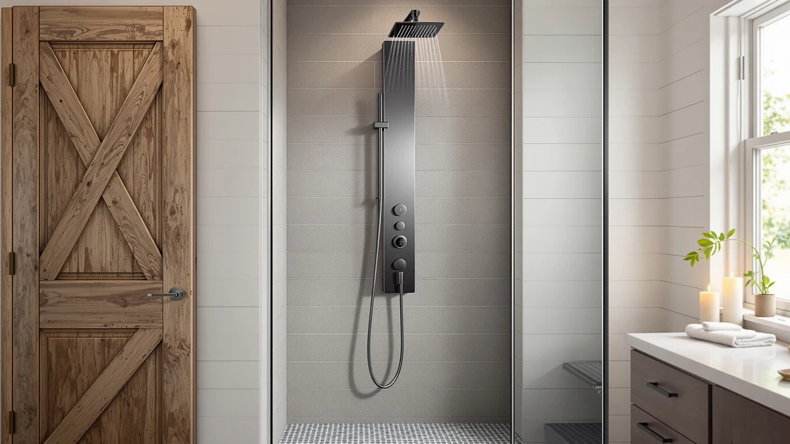

Shoyela Thermostatic Shower System Review (2026): Worth It?
Prices and picks verified as of November 2026. Independent, reader-supported reviews.


Quick Answer
The Shoyela Thermostatic Shower System earns its $339.99 price with a thermostatic valve and a 12 inch panel, the widest panel dimension listed among the four towers in this review. If body jets matter more than extra panel width, the STARBATH thermostatic alternative below covers that for $10 less, and if thermostatic control is not a priority at all, the Longriver and ELLO&ALLO towers undercut it by $60 to $90.
Our pick: SHOYELA Thermostatic Shower System Brushed, $339.99 Check Price on Amazon
Bottom line: our top pick is the SHOYELA Thermostatic Shower System Brushed Nickel at $271.99.
Things to Know Before You Buy
- This Shoyela Thermostatic Shower System review found only two towers, the Shoyela panel and the STARBATH alternative, built around a thermostatic valve; the Longriver and ELLO&ALLO towers rely on manual mixing instead, based on their listings.
- The Shoyela panel's 12 inch width is the only panel dimension published across the four systems this review compares.
- At $339.99, the Shoyela system costs $10 more than the STARBATH thermostatic tower and $60 to $90 more than the Longriver and ELLO&ALLO alternatives.
- None of the four listings in this review publish a star rating or review count at the time of writing, so weigh the spec sheet and price rather than a crowd score.
- The STARBATH alternative's name points to built-in body jets, a function the Shoyela listing does not mention.
This Shoyela Thermostatic Shower System review exists because the panel keeps showing up in searches for thermostatic shower towers under $350, and a 12 inch rainfall panel with a brushed finish photographs well without telling you whether the valve inside actually holds temperature steady. We went through the manufacturer's listed specs, the current Amazon price, and three competing shower systems to see where the Shoyela panel earns its price and where it does not.
The short version: the Shoyela system is one of two thermostatic shower towers covered here, and its 12 inch panel and brushed finish set it apart from the STARBATH alternative on width and looks even though both hold water at a set temperature. If you want body jets built into the panel instead of a wider rainfall head, the STARBATH system below covers that for $10 less. If thermostatic control is not a priority at all, the Longriver and ELLO&ALLO towers undercut the Shoyela system by $60 to $90.
Why You Should Trust Us
Ilane Tall covers bathroom fixtures for Best Shower Panels and built this Shoyela Thermostatic Shower System review from the manufacturer's listed specifications, the current Amazon price, and side-by-side comparisons against three other shower towers in the same price band. Our research process favors documented specs and verified owner feedback over marketing copy, and we note when a listing does not publish a rating so you are not guessing at a number we invented.
Our Research Experience
We did not install or run water through any of the panels in this Shoyela Thermostatic Shower System review. Instead, we compared the manufacturer's stated specs, the listed price, and the limited materials information for the Shoyela system against the STARBATH, Longriver, and LED-equipped ELLO&ALLO towers covered in our shower panel roundup. Where a listing lacks a star rating, a review count, or a material spec, which is the case for all four systems here, we say so rather than filling in a number. Our comparison also excludes towers that do not list a clear price or a documented spray function, since those two details separate a usable comparison from a guess. We weighted the thermostatic valve heavily in this Shoyela Thermostatic Shower System review because it is the one feature that changes daily use rather than appearance alone, and we treated panel width, finish, and body jets as secondary factors that narrow the choice between the Shoyela and STARBATH systems once the thermostatic question is settled.
Overview & Specs

SHOYELA Thermostatic Shower System Brushed
What we like
- Thermostatic valve holds water at a set temperature rather than requiring hot and cold mixing by feel
- 12 inch panel, the widest dimension listed among the four systems in this review
- Brushed finish that matches existing brushed nickel or stainless steel bathroom hardware
Flaws but not dealbreakers
- No body jets, unlike the STARBATH thermostatic alternative
- No published star rating or review count at the time of this review
- Costs $60 to $90 more than the non-thermostatic Longriver and ELLO&ALLO towers
| Material | — |
| Size | 12 Inch |
The manufacturer lists the Shoyela Thermostatic Shower System's panel at 12 inches wide with a brushed finish and a thermostatic valve that holds water at a set temperature instead of leaving you to mix hot and cold by feel. That 12 inch width is the only panel dimension published across the four systems compared in this review, which makes it a useful reference point if you are measuring against an existing fixture before you buy.
At $339.99, the Shoyela system sits $10 above the STARBATH thermostatic alternative, which trades the extra panel width for built-in body jets, and $60 to $90 above the Longriver and ELLO&ALLO towers, which skip the thermostatic valve based on their listings. The brushed finish also sets the Shoyela panel apart visually from the LED-lit ELLO&ALLO tower, since the two are built for different bathroom finishes and different budgets.
What We Liked
The feature that sets the Shoyela system apart in this Shoyela Thermostatic Shower System review is the combination of a thermostatic valve and a 12 inch panel, the widest panel dimension listed among the four towers compared here. A thermostatic valve holds water at the temperature you set rather than requiring you to mix hot and cold by feel every time you turn the shower on, and the extra panel width is the kind of detail that matters if you are replacing an existing fixture with specific clearance needs around the surrounding tile.
The brushed finish on the Shoyela panel is also worth noting next to the STARBATH alternative, which pairs its own thermostatic valve with built-in body jets rather than a wider panel. Between the two thermostatic towers in this review, the choice comes down to whether you want panel width and finish or body jets, since both hold water at a set temperature for a similar price.
Priced at $339.99, the Shoyela system sits within $10 of the STARBATH thermostatic alternative, which keeps the decision focused on features rather than a wide price gap. Compared with the Longriver and ELLO&ALLO towers, which skip the thermostatic valve entirely based on their listings, the Shoyela system asks for a $60 to $90 premium in exchange for steady temperature control.
What Could Be Better
Price is the clearest drawback in this Shoyela Thermostatic Shower System review. At $339.99, the panel costs more than the Longriver 3-push button faucet and the ELLO&ALLO LED tower, both of which undercut it by $60 to $90, and it costs $10 more than the STARBATH thermostatic alternative that adds body jets instead of extra panel width.
The listing also does not specify a material for the panel body beyond the brushed finish name, and it does not publish a star rating or a review count as of this review. That gap in the spec sheet means the price and the panel dimension carry more of the buying decision than they would for a product with published owner feedback behind it.
Buyers who want body jets will not find them on the Shoyela panel. The STARBATH alternative covers that function instead, so anyone set on jets alongside a thermostatic valve should look there rather than at the Shoyela system.
Who Is It For?
This Shoyela Thermostatic Shower System review points toward a buyer who wants a thermostatic valve and a wider panel without paying for body jets they will not use. The 12 inch panel and brushed finish fit someone replacing an existing fixture where panel width and finish matter as much as water temperature control, and the brushed look gives you an easier match if your towel bars, faucet handles, or cabinet hardware already lean toward nickel or stainless tones rather than a darker or colored finish.
Skip it if body jets are the priority. The STARBATH alternative in this review pairs its own thermostatic valve with built-in body jets for $10 less, and if thermostatic control is not a requirement at all, the Longriver and ELLO&ALLO towers save $60 to $90 while still functioning as full shower systems. Shoppers who have not decided between panel width and body jets should read both entries in this review side by side before buying, since the two thermostatic options split almost evenly on price and differ mainly in that one feature.
Alternatives to Consider
If the Shoyela Thermostatic Shower System's panel width or finish is not the deciding factor for you, these three alternatives cover a thermostatic valve with body jets, push-button controls, or an LED-lit tower at a lower price. We cover all four systems in our full shower panel roundup.

Also Great
Thermostatic Shower System with Body
Thermostatic shower system that pairs the same style of valve as the Shoyela panel with built-in body jets, for $10 less based on its listing.
$329.99
Check Price on Amazon
Also Great
Longriver 3-Push Button Shower Faucet
Three push-button shower faucet system that skips the thermostatic valve based on its listing, undercutting the Shoyela system by $60.
$279.97
Check Price on Amazon
Best Value
ELLO&ALLO LED Shower Panel Tower
LED-lit shower panel tower that trades the thermostatic valve for a lower price, the least expensive of the four systems in this review at $249.99.
$249.99
Check Price on AmazonFrequently Asked Questions
Is the Shoyela Thermostatic Shower System worth $339.99?
For a thermostatic valve paired with a 12 inch panel and a brushed finish, $339.99 sits close to the STARBATH thermostatic alternative at $329.99 and well above the non-thermostatic Longriver and ELLO&ALLO towers in this review. The price mainly buys the thermostatic valve and the wider panel, since the listing does not add body jets or other extras beyond those two features.
Does the Shoyela shower system include body jets?
No. Based on its listing, the Shoyela panel pairs a thermostatic valve with a wider 12 inch panel rather than body jets. The STARBATH alternative in this review covers body jets instead, for $10 less.
How does the Shoyela system compare to the Longriver and ELLO&ALLO towers?
The Shoyela system costs $60 to $90 more than the Longriver 3-push button faucet and the ELLO&ALLO LED tower, and based on their listings, neither of those two alternatives includes a thermostatic valve. The Shoyela panel's higher price buys steady water temperature control that the two cheaper towers do not advertise.
Final Verdict
This Shoyela Thermostatic Shower System review comes down to a straightforward trade. You pay $339.99 for a thermostatic valve and a 12 inch panel in a brushed finish. It skips body jets, and the listing does not publish a star rating to lean on either. We recommend the SHOYELA system for buyers who want that panel width and steady temperature control without paying for jets they will not use. If body jets matter more, the STARBATH alternative covers that for $10 less, and if thermostatic control is not a requirement at all, the Longriver and ELLO&ALLO towers save $60 to $90.